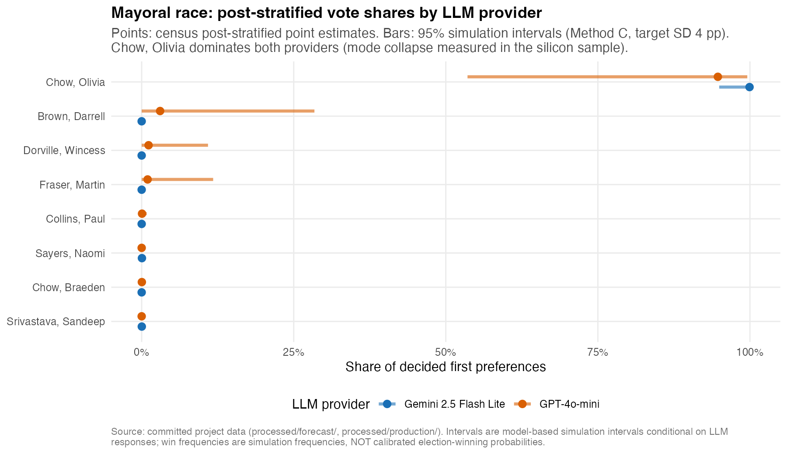
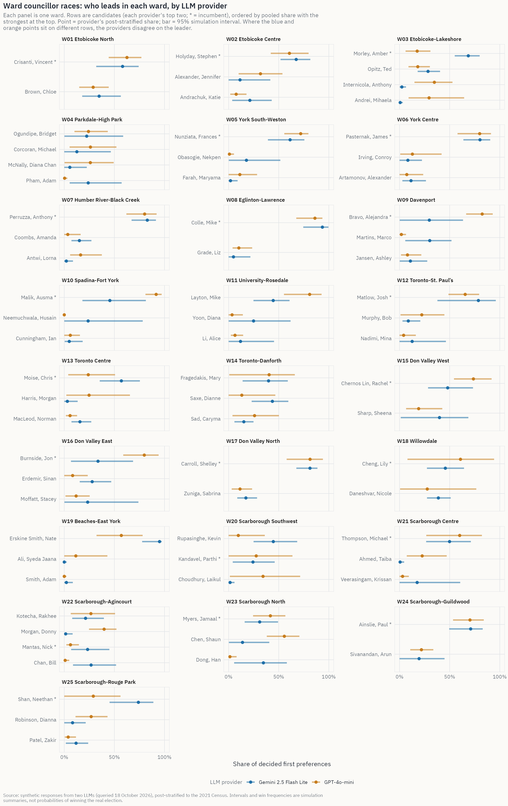
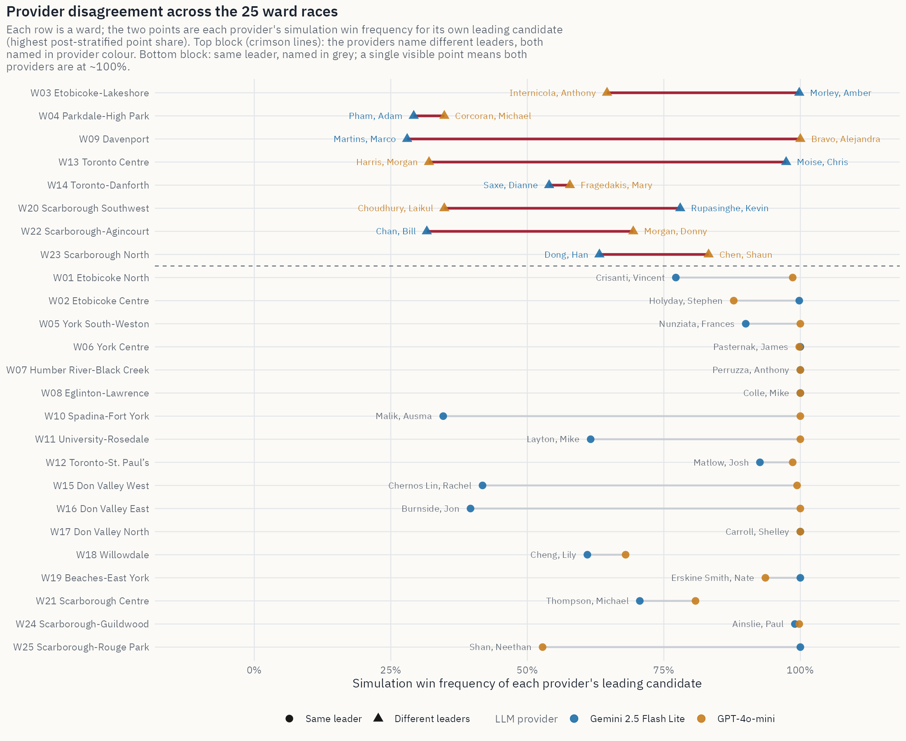
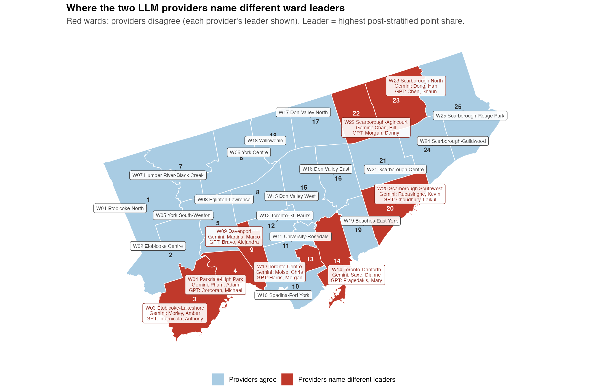
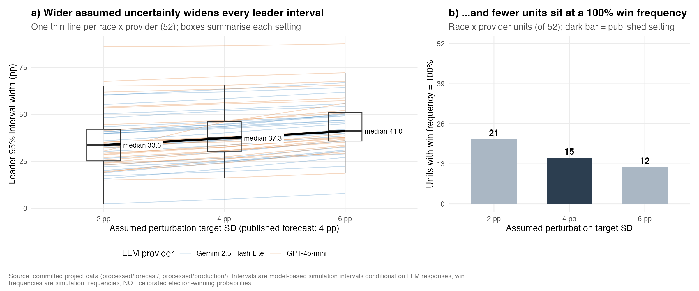
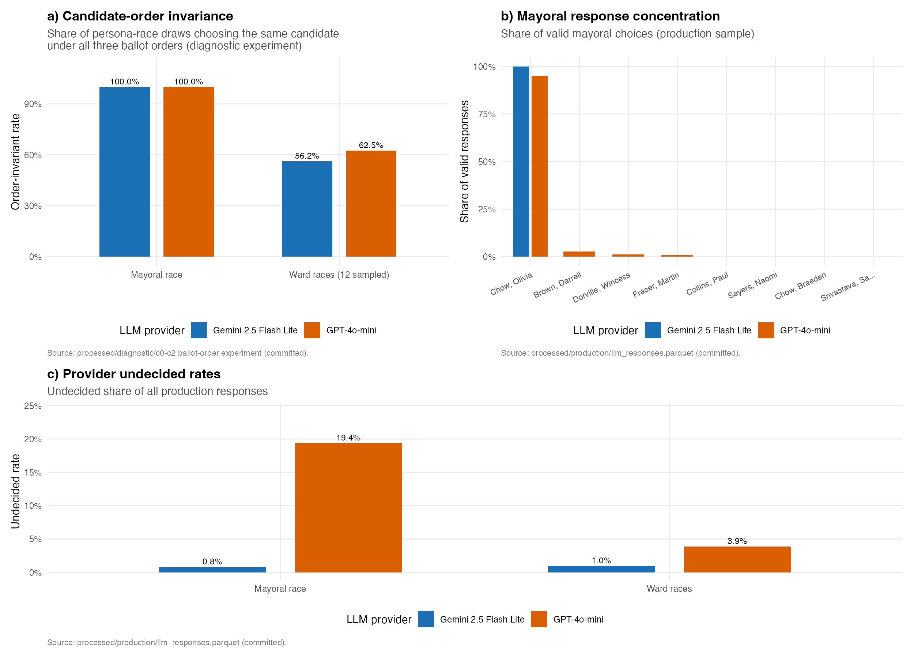

Toronto 2026 Municipal Election Forecast
An LLM silicon-sampling forecast with census post-stratification
Overview
Research question and objective
All the data on this page comes from synthetic voters. We use two Large Language Models (LLMs) to act as Census-based Toronto residents and answer ballot questions. No real people were surveyed.
Toronto will elect a mayor and 25 ward councillors on Monday 26 October 2026. However, there are almost no public polling results for these races. Previous research has discussed the problem of forecasting with samples that do not represent actual voters (Wang et al. 2015). In this project, we aim to investigate:
Can a silicon sample — simulated voters generated by large language models and post-stratified to Census marginals — produce a transparent, reproducible forecast for all 26 Toronto municipal races, and what uncertainty and model disagreement does it imply?
Our prediction objective is to build a reproducible pipeline to estimate vote-share distributions and conditional win frequencies for each candidate in the mayoral race and all 25 ward councillor races, while also showing the uncertainty in the results.
We use silicon sampling (Argyle et al. 2023) in this project, while also considering the challenges and limitations of using LLMs to simulate voters (Bisbee et al. 2024; Heath and Alexander 2026).
Pipeline:
We use two Large Language Model (LLM) providers to collect voting intentions from 3,042 synthetic personas, and the whole process is repeated three times. Since the population of synthetic personas may be different from that of Toronto, we decided to use post-stratification to calculate vote shares for each candidate. To include uncertainty, we chose to use Method C, which combines Dirichlet sampling and multiplicative adjustment (SD = 4pp) to further simulate possible results under various situations. Finally, we report the prediction results from each provider and provide an equally weighted aggregated prediction for comparison.
Headline Results:
- Mayor: Olivia Chow received 97.7% of valid responses. However, after adding headlines, the prediction results became unstable, with Brad Bradford receiving 97–99% of valid responses on 20 October and Olivia Chow receiving 99% on 21 October. This means that the models were more affected by headlines than by the demographic profiles of the synthetic personas.
- Wards: Based on the vote shares after post-stratification, the two providers disagreed on the leading candidate in 8 of 25 wards.
- Uncertainty: When the assumed perturbation increased from 2pp to 6pp, the median leading candidate interval width rose from 33.6pp to 41.0pp.
Election Forecasts
The mayoral race

In the figure, dots represent the estimates after post-stratification, and horizontal bars represent 95% simulation intervals. The two providers are shown separately in different rows, and the figure shows the eight candidates with the highest pooled vote shares. Gemini shows that Olivia Chow receives 99.9% of decided first-preference votes, while GPT-4o-mini gives a result of 94.7%. Meanwhile, GPT-4o-mini has a wider simulation interval, illustrating that GPT-4o-mini has more variation compared to Gemini. In our simulation, Chow’s win frequencies are 100% and 99.2% under Gemini and GPT-4o-mini, respectively. Although both providers give Chow very high win frequencies, these do not represent her actual probability of winning the election.
There is mode collapse in the production silicon sample. The prediction results fail to form a competitive distribution. The responses from both Gemini and GPT are mostly concentrated on the same candidate, Olivia Chow, who received 97.7% of all valid mayoral choices. To distinguish whether this is caused by ballot position, we conduct a diagnostic experiment. We reproduced the pipeline under three ballot orders (see Diagnostics). Nevertheless, the same mode collapse still appeared in the experiment. The same issue has also been documented by Heath and Alexander (2026). Besides, the Daily Tracker indicates instability in the outputs. When the day’s headlines favour Brad Bradford, the same mode collapse shifts to him. Hence, no uncertainty method can create a competitive forecast from these results.
Full mayoral detail, one row per candidate sorted by descriptive pooled share (candidates with pooled share above 0.1% or any provider share above 0.5%):
| Candidate | Incumbent | Pooled share | Gemini share [95% interval] | Gemini win freq. | GPT share [95% interval] | GPT win freq. |
|---|---|---|---|---|---|---|
| Chow, Olivia | yes | 97.3% | 99.9% [95.0-99.7%] | 100.0% | 94.7% [53.6-99.6%] | 99.2% |
| Brown, Darrell | 1.5% | 0.0% [0.0-0.2%] | 0.0% | 3.0% [0.0-28.4%] | 0.4% | |
| Dorville, Wincess | 0.6% | 0.0% [0.0-0.2%] | 0.0% | 1.1% [0.0-10.9%] | 0.0% | |
| Fraser, Martin | 0.5% | 0.0% [0.0-0.2%] | 0.0% | 1.0% [0.0-11.8%] | 0.4% |
Ward councillor races

Each ward will correspond to a single panel, where each panel shows the candidates ranked in the top two by either model to ensure the prediction of the top 1 candidate of each model can be included (incumbents marked *). Candidates are ordered by the descriptive pooled share from the highest to the lowest. For each model, the dot represents as provider’s point estimate and horizontal bar represents as 95% simulation interval. Therefore, if the highest dot appeared in different rows for two providers, it means that their predictions of the first ranking are disparate, such as Ward 03, 09 and 13 shown in the Figure. For each ward and provider, the effective sample sizes are small (Kish \(n_{\text{eff}}\) ≈ 79–165) so that the prediction intervals are wide (typically 30–60 percentage points). This reflects the uncertainty within LLM response mechanism. Full per-candidate summaries with all 243 candidates across 26 races are stored in processed/forecast/forecast_summary_centered.parquet.
All 26 races
Each race corresponds to one single row. The pooled leader is an equal-weight average of two providers instead of a combined forecast.
| Race | Candidates | Pooled leader | Gemini leader | GPT leader | Same leader? |
|---|---|---|---|---|---|
| Mayor | 53 | Chow, Olivia 97.3% |
Chow, Olivia 99.9% [95-100%] · win 100.0% |
Chow, Olivia 94.7% [54-100%] · win 99.2% |
yes |
| Ward 01 | 10 | Crisanti, Vincent 60.4% |
Crisanti, Vincent 58.2% [32-74%] · win 77.2% |
Crisanti, Vincent 62.6% [44-77%] · win 98.6% |
yes |
| Ward 02 | 3 | Holyday, Stephen 64.1% |
Holyday, Stephen 67.4% [52-82%] · win 99.8% |
Holyday, Stephen 60.7% [42-80%] · win 87.8% |
yes |
| Ward 03 | 4 | Morley, Amber 43.1% |
Morley, Amber 68.6% [55-80%] · win 99.8% |
Internicola, Anthony 34.7% [15-53%] · win 64.6% |
no |
| Ward 04 | 10 | Ogundipe, Bridget 23.3% |
Pham, Adam 23.9% [5-57%] · win 29.2% |
Corcoran, Michael 26.1% [5-52%] · win 34.8% |
no |
| Ward 05 | 9 | Nunziata, Frances 66.6% |
Nunziata, Frances 61.3% [39-76%] · win 90.0% |
Nunziata, Frances 71.9% [56-80%] · win 100.0% |
yes |
| Ward 06 | 3 | Pasternak, James 80.1% |
Pasternak, James 80.3% [64-90%] · win 100.0% |
Pasternak, James 79.9% [58-91%] · win 99.8% |
yes |
| Ward 07 | 3 | Perruzza, Anthony 81.5% |
Perruzza, Anthony 82.8% [67-91%] · win 100.0% |
Perruzza, Anthony 80.2% [62-92%] · win 100.0% |
yes |
| Ward 08 | 6 | Colle, Mike 89.9% |
Colle, Mike 93.6% [74-100%] · win 100.0% |
Colle, Mike 86.1% [67-94%] · win 100.0% |
yes |
| Ward 09 | 4 | Bravo, Alejandra 56.1% |
Martins, Marco 30.1% [6-52%] · win 28.0% |
Bravo, Alejandra 82.5% [66-93%] · win 100.0% |
no |
| Ward 10 | 8 | Malik, Ausma 68.6% |
Malik, Ausma 45.5% [18-81%] · win 34.6% |
Malik, Ausma 91.7% [81-97%] · win 100.0% |
yes |
| Ward 11 | 9 | Layton, Mike 62.7% |
Layton, Mike 44.5% [25-61%] · win 61.6% |
Layton, Mike 80.9% [55-93%] · win 100.0% |
yes |
| Ward 12 | 6 | Matlow, Josh 72.1% |
Matlow, Josh 78.7% [38-96%] · win 92.6% |
Matlow, Josh 65.5% [49-79%] · win 98.6% |
yes |
| Ward 13 | 11 | Moise, Chris 40.5% |
Moise, Chris 57.0% [35-75%] · win 97.4% |
Harris, Morgan 24.7% [2-66%] · win 32.0% |
no |
| Ward 14 | 18 | Fragedakis, Mary 40.1% |
Saxe, Dianne 43.7% [23-60%] · win 54.0% |
Fragedakis, Mary 40.4% [1-66%] · win 57.8% |
no |
| Ward 15 | 3 | Chernos Lin, Rachel 60.9% |
Chernos Lin, Rachel 48.0% [28-73%] · win 41.8% |
Chernos Lin, Rachel 73.7% [54-92%] · win 99.4% |
yes |
| Ward 16 | 4 | Burnside, Jon 56.8% |
Burnside, Jon 33.7% [7-69%] · win 39.6% |
Burnside, Jon 79.8% [59-94%] · win 100.0% |
yes |
| Ward 17 | 7 | Carroll, Shelley 81.2% |
Carroll, Shelley 81.2% [68-89%] · win 100.0% |
Carroll, Shelley 81.3% [58-94%] · win 100.0% |
yes |
| Ward 18 | 6 | Cheng, Lily 53.2% |
Cheng, Lily 45.7% [27-64%] · win 61.0% |
Cheng, Lily 60.8% [8-94%] · win 68.0% |
yes |
| Ward 19 | 13 | Erskine Smith, Nate 76.0% |
Erskine Smith, Nate 95.1% [78-97%] · win 100.0% |
Erskine Smith, Nate 56.9% [32-78%] · win 93.6% |
yes |
| Ward 20 | 8 | Rupasinghe, Kevin 27.1% |
Rupasinghe, Kevin 44.6% [25-68%] · win 78.0% |
Choudhury, Laikul 34.3% [1-71%] · win 34.8% |
no |
| Ward 21 | 11 | Thompson, Michael 55.0% |
Thompson, Michael 49.9% [27-71%] · win 70.6% |
Thompson, Michael 60.0% [27-82%] · win 80.8% |
yes |
| Ward 22 | 10 | Kotecha, Rakhee 23.9% |
Chan, Bill 26.8% [9-52%] · win 31.6% |
Morgan, Donny 39.8% [25-52%] · win 69.4% |
no |
| Ward 23 | 8 | Myers, Jamaal 36.3% |
Dong, Han 34.7% [6-58%] · win 63.2% |
Chen, Shaun 55.6% [38-71%] · win 83.2% |
no |
| Ward 24 | 6 | Ainslie, Paul 70.6% |
Ainslie, Paul 71.0% [50-83%] · win 99.0% |
Ainslie, Paul 70.3% [53-84%] · win 99.8% |
yes |
| Ward 25 | 10 | Shan, Neethan 51.5% |
Shan, Neethan 74.0% [45-89%] · win 100.0% |
Shan, Neethan 29.0% [0-56%] · win 52.8% |
yes |
Daily Tracker
A scheduled GitHub Action asks the same personas to generate results every day based on that day’s Toronto headlines and updates the figures and tables here.
Latest estimate · 5-day average across 2 models · Updated Sunday, October 25, 2026, 10:23 AM EDT · 6 polling days so far
| Mayoral candidate | Share of decided voters |
|---|---|
| Olivia Chow | 81.2% |
| Brad Bradford | 18.8% |
| Imad Abdulkadir | 0.0% |
| Bahira Abdulsalam | 0.0% |
| Chris Alexander | 0.0% |
Mayor
Each point is one model’s share that day. The thick line is a moving average of the two models.

Results for October 25, 2026: post-stratified share [95% simulation interval] · simulation win frequency.
| Candidate | Gemini 2.5 Flash Lite | GPT-4o-mini |
|---|---|---|
| Olivia Chow | 100.0% [92.5%, 98.9%] · win 100% | 87.6% [66.5%, 94.2%] · win 100% |
| Brad Bradford | 0.0% [0.0%, 0.4%] · win 0% | 12.4% [4.2%, 29.9%] · win 0% |
| Imad Abdulkadir | 0.0% [0.0%, 0.4%] · win 0% | 0.0% [0.0%, 0.3%] · win 0% |
| Bahira Abdulsalam | 0.0% [0.0%, 0.4%] · win 0% | 0.0% [0.0%, 0.3%] · win 0% |
| Chris Alexander | 0.0% [0.0%, 0.3%] · win 0% | 0.0% [0.0%, 0.4%] · win 0% |
Shares for the last 14 days:
| Date | Olivia Chow (Gemini 2.5 Flash Lite) | Olivia Chow (GPT-4o-mini) | Brad Bradford (Gemini 2.5 Flash Lite) | Brad Bradford (GPT-4o-mini) |
|---|---|---|---|---|
| 2026-10-25 | 100% | 88% | 0% | 12% |
| 2026-10-24 | 100% | 100% | 0% | 0% |
| 2026-10-23 | 98% | 100% | 2% | 0% |
| 2026-10-22 | 18% | 9% | 82% | 91% |
| 2026-10-21 | 100% | 99% | 0% | 1% |
| 2026-10-20 | 3% | 1% | 97% | 99% |
Ward councillor races
Each panel is one ward. Lines are moving-average shares for that ward’s top two candidates.

| Ward | Leader | Leader share | Runner-up | Runner-up share | Today: Gemini 2.5 Flash Lite | Today: GPT-4o-mini |
|---|---|---|---|---|---|---|
| W01 Etobicoke North | Chloe Brown | 56.1% | Vincent Crisanti* | 36.6% | Vincent Crisanti (100%) | Chloe Brown (47%) |
| W02 Etobicoke Centre | Stephen Holyday* | 58.0% | Katie Andrachuk | 23.6% | Stephen Holyday (66%) | Katie Andrachuk (39%) |
| W03 Etobicoke-Lakeshore | Amber Morley* | 37.5% | Ted Opitz | 24.7% | Ted Opitz (63%) | Mihaela Andrei (35%) |
| W04 Parkdale-High Park | Diana Chan McNally | 44.3% | Michael Corcoran | 14.7% | NA | Diana Chan McNally (75%) |
| W05 York South-Weston | Frances Nunziata* | 71.6% | Maryama Farah | 11.0% | NA | Frances Nunziata (53%) |
| W06 York Centre | James Pasternak* | 70.3% | Alexander Artamonov | 19.8% | Alexander Artamonov (59%) | James Pasternak (68%) |
| W07 Humber River-Black Creek | Anthony Perruzza* | 74.3% | Lorna Antwi | 18.0% | Anthony Perruzza (53%) | Anthony Perruzza (59%) |
| W08 Eglinton-Lawrence | Mike Colle* | 96.3% | Liz Grade | 2.9% | Mike Colle (100%) | Mike Colle (89%) |
| W09 Davenport | Alejandra Bravo* | 59.9% | Ashley Jansen | 22.2% | Ashley Jansen (78%) | Alejandra Bravo (98%) |
| W10 Spadina-Fort York | Ausma Malik* | 89.4% | Aanchal Vashistha | 8.1% | NA | Ausma Malik (98%) |
| W11 University-Rosedale | Mike Layton | 68.9% | Alice Li | 15.3% | Mike Layton (68%) | Mike Layton (75%) |
| W12 Toronto-St. Paul’s | Josh Matlow* | 88.0% | Bob Murphy | 8.6% | Josh Matlow (100%) | Josh Matlow (72%) |
| W13 Toronto Centre | Chris Moise* | 68.4% | Daniel Tate | 11.2% | NA | Chris Moise (70%) |
| W14 Toronto-Danforth | Dianne Saxe | 40.2% | Mary Fragedakis | 32.6% | Dianne Saxe (72%) | Mary Fragedakis (57%) |
| W15 Don Valley West | Rachel Chernos Lin* | 72.0% | Sheena Sharp | 25.0% | Rachel Chernos Lin (100%) | Rachel Chernos Lin (66%) |
| W16 Don Valley East | Jon Burnside* | 49.1% | Stacey Moffatt | 44.2% | Stacey Moffatt (87%) | Jon Burnside (56%) |
| W17 Don Valley North | Shelley Carroll* | 97.6% | Sabrina Zuniga | 2.2% | Shelley Carroll (89%) | Shelley Carroll (97%) |
| W18 Willowdale | Lily Cheng* | 88.0% | Ardeshir Zarezade | 7.5% | NA | Lily Cheng (91%) |
| W19 Beaches-East York | Nate Erskine-Smith | 67.0% | Devin Wilkins | 16.0% | Nate Erskine-Smith (100%) | Devin Wilkins (55%) |
| W20 Scarborough Southwest | Laikul Choudhury | 34.0% | Kevin Rupasinghe | 26.4% | NA | Kevin Rupasinghe (49%) |
| W21 Scarborough Centre | Michael Thompson* | 27.7% | Taiba Ahmed | 20.5% | Michael Thompson (100%) | Akina Lalla (37%) |
| W22 Scarborough-Agincourt | Rakhee Kotecha | 67.4% | Nick Mantas* | 14.1% | Bill Chan (59%) | Rakhee Kotecha (54%) |
| W23 Scarborough North | Jamaal Myers* | 53.2% | Shaun Chen | 43.2% | NA | Jamaal Myers (58%) |
| W24 Scarborough-Guildwood | Paul Ainslie* | 80.1% | Arun Sivanandan | 18.8% | Paul Ainslie (80%) | Paul Ainslie (55%) |
| W25 Scarborough-Rouge Park | Neethan Shan* | 54.2% | Shawn Allen | 18.8% | NA | Neethan Shan (87%) |
Leader and runner-up by 5-day average of the cross-model mean; * = incumbent. “Today” columns give each model’s own leader on October 25.
Today’s news context
Headlines shown to the personas that morning.
Headlines shown to every persona on October 25, 2026 (12 items from 4 feeds):
- CBC Toronto: Sticky note mosaic honours fallen soldier in Toronto
- Toronto Sun: Brad Bradford and Olivia Chow trade parting shots on eve of Toronto mayoral election
- CityNews Toronto: The Latest: Brazilians choose between Lula and Flávio Bolsonaro in presidential runoff
- Global News Toronto: Why some Ontario voters are turning to AI chatbots for 2026 municipal elections
- CBC Toronto: Voter turnout in Peel region tends to be low. Meet the students trying to change that
- CityNews Toronto: Americans in Canada urge fellow expats to vote in high-stakes midterm elections
- Toronto Sun: TEDJO: We owe voters our respect – and a plan
- CBC Toronto: Transit a ‘glaring oversight’ for Durham region candidates, some riders and advocates say
- Toronto Sun: LILLEY: Extortion accused and ex-con enter Brampton political fray
- CBC Toronto: Oshawa Votes 2026: Where mayoral candidates stand on key issues
- Global News Toronto: Energized Leafs continue hot roll with 7-2 win
- CityNews Toronto: 61-year-old killed in Hwy. 404 car crash
API costs
What that day’s requests cost.
| Date | Model | Requests | Valid | Undecided | Failed | Input tokens | Cached | Output tokens | Cost |
|---|---|---|---|---|---|---|---|---|---|
| 2026-10-25 | Gemini 2.5 Flash Lite | 2,400 | 1,461 | 937 | 2 | 3,217,760 | 198,785 | 61,126 | $0.33 |
| 2026-10-25 | GPT-4o-mini | 2,400 | 2,180 | 219 | 0 | 2,937,904 | 1,022,720 | 41,829 | $0.39 |
| 2026-10-24 | Gemini 2.5 Flash Lite | 2,400 | 1,471 | 929 | 0 | 3,258,560 | 236,346 | 63,870 | $0.33 |
| 2026-10-24 | GPT-4o-mini | 2,400 | 2,149 | 250 | 0 | 2,981,104 | 1,012,608 | 42,524 | $0.40 |
| 2026-10-23 | Gemini 2.5 Flash Lite | 2,400 | 1,381 | 1,016 | 3 | 3,092,469 | 175,539 | 57,660 | $0.32 |
| 2026-10-23 | GPT-4o-mini | 2,400 | 1,707 | 693 | 0 | 2,861,104 | 901,632 | 40,225 | $0.39 |
| 2026-10-22 | Gemini 2.5 Flash Lite | 2,400 | 1,323 | 1,072 | 5 | 3,157,760 | 205,935 | 61,013 | $0.32 |
| 2026-10-22 | GPT-4o-mini | 2,400 | 2,069 | 328 | 0 | 2,916,304 | 978,432 | 40,887 | $0.39 |
| 2026-10-21 | Gemini 2.5 Flash Lite | 2,400 | 1,319 | 1,072 | 9 | 3,242,377 | 337,767 | 61,756 | $0.32 |
| 2026-10-21 | GPT-4o-mini | 2,400 | 1,588 | 810 | 0 | 2,990,704 | 1,052,928 | 39,344 | $0.39 |
| 2026-10-20 | Gemini 2.5 Flash Lite | 2,400 | 1,587 | 813 | 0 | 3,227,360 | 182,600 | 63,385 | $0.21 |
| 2026-10-20 | GPT-4o-mini | 2,400 | 1,771 | 626 | 0 | 2,949,904 | 1,020,928 | 40,878 | $0.33 |
Cumulative daily-tracker spend: $4.11 over 6 days (actual cost reported by OpenRouter).
Provider Comparison

The map below shows the same disagreement geographically: every ward is labelled with its number and name, and each red ward also lists the two providers’ different leaders. Disagreement clusters in the old city core (Wards 04, 09, 13, 14), the Etobicoke lakeshore (03), and northern and southwestern Scarborough (20, 22, 23).

Reconciling two leader definitions
A leading candidate can be defined in two ways:
- Provider point estimates: Average the results from three repeat cells.
- Win frequencies: Average the results from 500 draws that resample cells and add uncertainty layers.
These two methods may identify different leading candidates in some wards.
| Leader definition | Wards where providers disagree |
|---|---|
| Highest post-stratified point share (used on this site) | 8: W03, W04, W09, W13, W14, W20, W22, W23 |
| Highest simulation win frequency | 7: W03, W04, W14, W15, W20, W22, W23 |
The website uses the point-share definition throughout (Figure 2, Figure 5, Figure 6, Table 2, and this section). The three definitional edge cases are instructive:
- Ward 09: Based on vote-share point estimates, the two providers disagree. Gemini shows that three candidates’ vote shares are close (Marco Martins (30.1%), Alejandra Bravo (29.7%), and another candidate (29.3%)), with Marco Martins slightly leading, while GPT mainly supports Alejandra Bravo (82.5%). Conversely, based on win frequencies, both providers agree that Bravo is the leading candidate.
- Ward 13: Based on vote-share point estimates, the two providers disagree. Gemini predicts that Chris Moise gets 57.0%, while GPT shows that Morgan Harris is leading with 24.7%, which is slightly higher than Chris Moise’s 24.0% under the same provider. Conversely, based on win frequencies, both providers agree that Moise is leading.
- Ward 15: Based on vote-share point estimates, both providers agree that Rachel Chernos Lin is leading (48.0% from Gemini and 73.7% from GPT). Conversely, based on win frequencies, the two providers disagree. In Gemini’s simulation, Sheena Sharp has a higher win frequency (58.0%) than Rachel Chernos Lin (41.8%).
Two patterns matter regardless of definition:
- The two providers disagree more than our uncertainty settings do. Among several wards with different prediction results, one provider gives its leading candidate a win frequency close to 90%, while the other gives its own leading candidate only about 35%. It indicates that the difference between providers is much larger than the change from any uncertainty setting we tested (see Forecast Uncertainty).
- The two providers answer from different groups of personas. It is much more common for GPT-4o-mini to answer “undecided” compared to Gemini, especially in the mayoral election (19.4% vs. 0.8%; see Diagnostics). Since “undecided” answers are excluded from further predictions, each provider predicts based on different synthetic personas. We will report predictions for the two providers separately, and the pooled column is only for description instead of a pooled forecast.
Forecast Uncertainty
Our forecast uncertainty comes from several sources. We used a Dirichlet model to simulate the prediction sampling uncertainty, and we also add a 4-percentage-point standard deviation in Method C to try to capture the random changes in a real election. However, changes in the turnout, unexpected campaign events, or systematic biases shared by the LLMs still remains. Shirani-Mehr et al. (2018) show that bias and variance are the two most common error generated by real election poll, Since the election has not yet taken place, we cannot measure these biases against actual results. Our uncertainty intervals may therefore be narrower than the true uncertainty on the election outcomes.
Below describes four sources of uncertainities, along with how we handle each of them in our simulations.
- LLM response variability: when grabing answers from our synthetic voter, we asked LLM three times and got different voting result (since temperature was set to 0.7). When performing forecast simulations later on, we will select random one from the three previous response.
- Dirichlet sampling uncertainty: shares ~ Dirichlet(\(n_{\text{eff}} \cdot \hat{s} + 0.5\)), where \(n_{\text{eff}} = (\sum_i w_i)^2 / \sum_i w_i^2\) is the Kish effective sample size of the post-stratified cell. This approximates how much the estimated vote shares could vary because they are based on a limited, unequally weighted synthetic sample.
- Assumed forecast perturbation (Method C): a centered multiplicative perturbation \(s_k \propto s_k \cdot e^{\sigma \varepsilon_k}\), \(\varepsilon \sim N(0,1)\), with \(\sigma\) calibrated per race so this layer alone gives the leader a standard deviation of the target standard deviation (SD), with 4pp as default. It keeps the sum of all candidates’ support rate adds to one, does not change 0% supported candidates, and is preserving the mean.
- Real election uncertainty: We cannot model this uncertainty since we cannot accounts for turnout swings, campaign events, polling house effects, or systematic model errors.
Throughout this site, simulation win frequency is the fraction of the candidate getting highest support rate among all 500 simulations. It is not equal to the actual probability of that candidate wins the real 2026 election, we have no ground truth to calibrate against, and LLMs have systematic bias that cannot be corrected. This was mentioned in Gelman et al. (2020) and Kay et al. (2016) that communicating the gap between uncertainty in simulation and uncertainty in real world is important, a 100% support rate in graph does not mean the election result is set. Currently 15 of 52 race × provider units show a win frequency of exactly 100%, and 18 of 52 sit at or below 70%.
Sensitivity to the assumed perturbation scale

We want to know if changing the 4pp SD in Method C to 2pp or 6pp, how would it affects the prediction result. So we re-ran the forecast simulation three times, changing only the standard deviations. Panel (a) tracks each race × provider leader’s 95% interval width across the three simulations, the graph shows a linear upward trend when standard deviation increased, supporting that adding more standard deviation leads to wider interval. Panel (b) counts how many race × provider units still give their leader a 100% win frequency, as the standard deviation increased, more noise included, model become more uncertain and the number of units at 100% win kept dropping. Together they show that the width of our intervals and how many races look like a certain win are partly a modelling choice, not something the data pins down.
Other than the perturbation scale, adding 0.5 to Dirichlet will shrink the overall supporting rate towards uniform, causing support rate for leader to decrease. We saw our worst case in Ward 19, where pseudo-count takes 5.4% of the total Dirichlet parameters, and average leader support rate decreased by 4.7pp. On the other hand, Method C can only approximately preserve the center.
Silicon Sampling Diagnostics

In the previous section, we measured how uncertain the simulation results are. Now we want to explore on whether the synthetic voter responses generated by LLMs are reliable.
Candidate-order invariance. We first want to understand if the sequence of candidates affect LLM’s decision. In this diagnostic, we asked each persona-race under three ballot orders: original ballot order, and two randomized orders. The mayoral choice was 100% order-invariant for both LLMs, which confirms that the collapse is knowledge-driven, instead of affecting by the bollot position. Ward-race choices, whereas, were invariant in only 56–63% among all three ballot orders, meaning 37-44% persona-race combination changed their selection when order changed. For example, Ward 10, using same persona, changed their voting when ballot order is different, this shows ward-level LLM responses are unstable and are meaningfully order-sensitive, which Murray and Alexander (2026) also documented. We decided to retain original ballot order rather than randomizing.
Mayoral response concentration. From the result ran on first day (2026-10-17), 99.9% (Gemini) and 95.0% (GPT) voted for Chow, and the remaining mass is spread over other minor candidates.
Provider undecided rates. We allow synthetic voters to not select any candidate, and instead respond “undecided”. During mayoral race, GPT-4o-mini answers “undecided” on 19.4% of the time while Gemini 2.5 Flash Lite gives 0.8%. During ward races, GPT-4o-mini gives “undecided” 3.9% of the times and Gemini 2.5 Flash Lite is 1.0%. We excluded undecided responses from estimation and only count those who decided the candidate they want to vote for.
To summarise, LLMs are sensitive to ordering of the candidates, they might not be able to show preferences from all voters, and different LLMs have different response rate.
Full diagnostic design and report is available at: docs/llm_diagnostic_experiment.md and docs/llm_diagnostic_report.md.
Data and Methods
Data sources
We use official City of Toronto data to construct our synthetic voter population, identify candidates in the 2026 municipal election, and provide historical and geographic context. The main datasets and their uses are summarized below.
| Dataset | Use | Source |
|---|---|---|
| Ward Profiles, 25-ward model (2021 Census) (City of Toronto 2023) | Population frame and post-stratification marginals (ward × age × education) | Toronto Open Data |
| Official 2026 candidate lists (mayor, councillors, withdrawn) (City of Toronto 2026a) | Candidate roster and ballot names for all 26 races | toronto.ca elections |
| Official 2022 election results (City of Toronto 2022a) | Historical sanity checks; candidate/incumbency context | Toronto Open Data |
| 2023 mayoral and Ward 20, 2024 Ward 15, 2025 Ward 25 by-election results | Updated historical context | Toronto Open Data |
| 2022 Elections Voter Statistics (City of Toronto 2022b) | Ward-level turnout context | Toronto Open Data |
| Wards and Elected Councillors boundaries (City of Toronto 2026b) | Map geometry and ward validation | Toronto Open Data |
| Elected officials 2022–2026 | Incumbent identification (name match) | Toronto Open Data |
All datasets were downloaded using download_data.R. Their original URLs, file sizes, and SHA-256 checksums are recorded in sources.json to support reproducibility.
We use the 2021 Census Ward Profiles to build the population frame for post-stratification. Each ward is divided into four age groups and three education groups, giving us 12 demographic groups per ward and 300 across Toronto’s 25 wards. We restrict the population to residents aged 20 and older.
One limitation is that the available Census tables report age and education separately, rather than their joint distribution within each ward. We therefore estimate the proportion of each age–education group by multiplying the two marginal proportions: \(P(\text{Age}, \text{Education} \mid \text{Ward}) \approx P(\text{Age} \mid \text{Ward})\,P(\text{Education} \mid \text{Ward})\)
This assumes that age and education are independent within each ward, which may not hold in practice. As a result, the population weights used in post-stratification are approximations rather than exact Census counts for each demographic group.
Silicon sampling
Using 2021 Census data, we split Toronto population into 25 wards * 4 age groups * 3 education groups = 300 cells. We then generated 3,042 synthetic voter among the 300 cells based on each cell’s population with age above 20. We defined at least five personas per cell, so the final synthetic sample population may not refelect the true census population. Therefore, we assign each persona a weight to let it be able to represent the population during post-stratification.
In the experiment, we used two LLMs through OpenRouter: Gemini 2.5 Flash Lite and GPT-4o-mini. For every persona in each model, they were asked three times independently, and we used a temperature of 0.7. With 3,042 personas, each run 2 races (mayoral and ward), two models, and three repetitions, this produced 36,504 requests.
In each prompt, we included the persona’s ward, age group, education level, and the candidates running in that race. The models were not given other personas’ responses, Census weights, candidate biographies, policy positions, or historical election results. We also randomized candidate order to reduce reliance on any single ballot ordering, although our previous results showed that ward-level responses remain sensitive to candidate order.
Responses were collected on October 18, 2026, and validated against a structured JSON format. Invalid responses were retried, and successful responses were cached to avoid unnecessary API calls. The final dataset contains 36,504 responses and is saved in processed/production/llm_responses.parquet.
What the model sees
Each request has a fixed system message (prompt version v1, llm/prompts.py) and a short user message. The system message tells the model it is simulating one Toronto resident in a municipal election survey, asks for a JSON reply of the form {"response_status": "valid_choice" | "undecided" | "not_voting", "candidate_id": ...}, and instructs it to base its choice only on the candidate names and the respondent’s demographics. The user message for persona P000446 and the Ward 4 race reads as follows (shown in ballot order; production shuffles the list per request):
Respond as the following Toronto resident:
- Ward: 4
- Age group: 30-44
- Education group: High school or less
Race: City Councillor for Ward 4 (you are a resident of Ward 4).
Candidates in this race (candidate_id: name):
- W04-C01: Corcoran, Michael
- W04-C02: Guerrera, Nadia
- W04-C03: King, Debbie
- W04-C04: McNally, Diana Chan
- W04-C05: Ogundipe, Bridget
- W04-C06: Pham, Adam
- W04-C07: Potega, Andy
- W04-C08: Raponi, Vanessa
- W04-C09: Weber, Holly
- W04-C10: Yuen, Steve
Return only the JSON object.The daily tracker (prompt v2) adds the date, the election date, and up to 12 of that day’s Toronto headlines to the system message.
Post-stratification
To adjust synthetic responses to the real population, inspired by Wang et al. (2015) and Little (1993), we used post-stratification to weight each persona according to the population share for each ward they based on. For each race, LLM provider, and repeat, we estimate candidate vote share to be weighted proportion of the decided responses. \[\hat{s}_k \;=\; \frac{\sum_i w_i \,\mathbf{1}[\text{choice}_i = k]}{\sum_i w_i}\]
Undecided and not-voting replies are excluded from both numerator and denominator since we want the candidate share among decided synthetic responses only, it is not turnout, nor the voting rate for entire population.
For ward races, we sum over that ward’s personas only, while the mayoral race sums over all personas with citywide weights.
Since we repeated three times per persona, we take their average as the point estimates. A descriptive pooled estimate is averages the response from all repetitions and LLM providers, we used it as a simple summary for readers, and it’s never used as “the” forecast.
Software
The language models are GPT-4o mini (OpenAI 2024) and Gemini 2.5 Flash-Lite (Google DeepMind 2025), both reached through OpenRouter (OpenRouter 2026). The query pipeline is written in Python (Python Software Foundation 2025) with requests (Reitz 2025) and PyArrow (Apache Arrow Developers 2026), and tested with pytest (Krekel et al. 2026). Cleaning, post-stratification, simulation, and figures use R (R Core Team 2024) with dplyr (Wickham et al. 2023), tidyr (Wickham, Vaughan, et al. 2024), readr (Wickham, Hester, et al. 2024), readxl (Wickham and Bryan 2023), jsonlite (Ooms 2014), digest (Eddelbuettel 2024), nanoparquet (Csárdi and Mühleisen 2025), sf (Pebesma and Bivand 2023), ggplot2 (Wickham 2016), scales (Wickham et al. 2025), patchwork (Pedersen 2024), ggrepel (Slowikowski 2026), ragg (Pedersen and Shemanarev 2026), and systemfonts (Pedersen et al. 2024); tests use testthat (Wickham 2011) and code is formatted with styler (Müller et al. 2025). The site is built with Quarto (Allaire et al. 2026) and set in IBM Plex Sans (Abbink and Bold Monday 2018).
Discussion
What a silicon sample measures in a local election
Argyle et al. (2023) showed LLMs conditioned on detailed personal background such as demographic and partisan, could reproduce the vote-choice patterns similar to those groups in reality, which they called algorithmic fidelity. However, in our simulation, information like paty label is lacked since Toronto’s municipal elections have no party labels. Thus, our persona only contained only ward, age band, and education band. The model have a hard time distinguishing voters purely from those demographic features, and relied more on their existing knowledge of the candidates. In our frozen run, Olivia Chow wins 97.7% valid votes, and Brad wasn’t selected even once, meaning LLMs are leaning to vote their most familiar candidates.
The collapse follows salience, not demographics
Our model observed that almost all synthetic voters vote for same candidate at the same timestamp, which was mode collapse mentioned by Heath and Alexander (2026). In the beginning, with almost all synthetic voters voting for Olivia Chow, whereas this trend begin to change around Oct.20 according to our daily tracker. This observation supported that LLMs may not learn from our synthetic persona’s background, but instead reflecting the news we feed into the model. With only the headlines of news change, on 20 October, headlines reported Bradford pulling ahead, both models gave Bradford 97–99% of decided votes; later on 21 October, with headlines about criticism of Bradford’s water plan, both model chose to give Chow about 99% voting share.
Bisbee et al. (2024) found that synthetic answers have far less variance than real ones and can shift with wording of the prompts as well as the date of the query. This is also supported by Santurkar et al. (2023), who found that simulating a group’s opinion using LLMs could not recover the true difference between different group population. Wang et al. (2024) also showed that LLMs can suppress the different opinion within the group.
Analyst choices are first-order
According to Murray and Alexander (2026), minor changes in some parameters can change the silicon samples significantly. We see the same at every stage we varied. Changing the candidate order changed 37–44% of the voting response for ward race, and changing the provider changed the leading candidate in 8 of 25 wards. On the other hand, changing the forecast-noise standard deviation from 2pp to 6pp will increase the median 95% interval width by 7pp. Adding a day’s news headlines will also change the response as mentioned in previous chunk. Each of these is large enough and cannot be just concluded as sampling uncertainty, which is why we publish both LLMs’ results separately and show every sensitivity rather than one blended number.
What post-stratification can and cannot fix
Wang et al. (2015) forecast a US election accurately from a heavily skewed sample of Xbox users, using multilevel regression and post-stratification to reweight a sample that is unrepresentative but still contains real differences between groups. Post-stratification cannot create differences that are not there, so even though we have 3,042 personas, if everyone gave almost the same answer, adding more personas does not mean adding more unique preference information. Thus, our current silicon sample result is more suitable to measure how two LLMs perform differently, rather than being used directly as voter poll.
Limitations
- No external calibration. Since Toronto 2026 has no published polling and we did not calibrate against historical election errors, our simulation win frequencies should and must not be quoted as real winning probabilities (Gelman et al. 2020).
- Mayoral mode collapse. In our mayoral race, 97.7% valid synthetic votes concentrated on a single candidate, invariant to ballot order.
- No turnout model. Only 2 of 36,504 replies were “not voting”, which does not mimic the real voting engagement. For example, even though young population in a ward is large, but there could be small portion of them that actually voted. So ignoring the turnout rate, and purely used cencus population weights instead of likely-voter weights will biased the result.
- Informative undecided responses. GPT-4o-mini declines 19.4% of mayoral queries, and we excluded all those “undecided” when doing post-stratification. If we assume young people are more likely to respond “undecided” compared to older people, then excluding those answer will removing some impact from young population, making our synthetic result no longer representative. (Bisbee et al. 2024).
- Census independence approximation. Currently we assumed Age and Education are independent when given Ward, whereas they could be correlated in reality.
- Provider disagreement dominates method choices. We used two LLMs to predict same 25 ward councillor elections, and in 8 of them, the LLMs actually chosen different leading candidates. If we just do a simple average of the voting share among the two LLMs, it will hide this difference. Thus, we choose to reveal each model’s selection in our report.
- Small effective samples Even we have 3,042 in total, but each ward only owns a small portion of it. The Kish effective sample size \(n_{\text{eff}}\) in ward elections will only be around 79–165, leading to more sparse distribution for the Dirichlet sampling as well as wider uncertainty intervals. Also when adding 0.5 to the Dirichlet pseudo-count, it might shrink the original leading candidates to approach unifrorm prior, in the most significant ward, this shrinkage to leader is approximately -4.7pp. Another limitation is when applying Method C, we hope the predicted center to remain the same and only adds uncertainty. However, we need to apply normalization after multiplicative perturbation, which might cause the mean response to shift.
- Simulated voters are not voters. The entire electorate is synthetic; the forecast measures what two LLMs say about a Census-shaped persona frame (Bisbee et al. 2024).
Conclusion and Future Work
To summaries, we’ve ran silicon sampling with census post-stratification and produced a complete, reproducible forecast for the upcoming Toronto mayoral and city councillor election.
Our result founds that without news, model collapsed to select a single candidate, where in our initial frozen experiment, 97.7% valid synthetic votes vote for Chow, unchanged by ballot order. With a day’s news headlines, the entire synthetic preference moves to whichever candidate the headlines favour. Ward races are more varied, and the two providers disagree about the leading candidates in 8 of 25 wards. Our uncertainty has not yet been calibrated to the real election error, but we did repeat LLM votings, Dirichlet sampling, extra perturbation in Method C, as well as sensitivity analysis on target standard deviations based to understand the possible uncertainities.
Natural next steps, in order of value:
- Calibrate after 26 October. Score every provider forecast against the official results with Brier and log scores, and measure the real coverage of the simulation intervals — turning the current honest disclaimer into an empirical error estimate.
- Model the undecided. Treat “undecided” as an outcome to be modelled (e.g., a separate post-stratified rate with principled allocation) instead of dropping it.
- Correct mode collapse following Heath and Alexander (2026) (semantic similarity rating) and re-test whether the mayoral race becomes informative.
- Strengthen the frame by obtaining age × education joint counts (e.g., PUMF) to remove the independence approximation, and adding a turnout layer informed by City of Toronto (2022b).
- Combine providers with an explicit hierarchical model that treats provider as a random effect, instead of reporting arms separately.
Reproducibility
Repository: https://github.com/Sophiaaa12/toronto-election-forecast — everything below runs from a fresh clone. The site is deployed with GitHub Pages from the gh-pages branch (built from website/); rendering makes no API calls and modifies no data.
Complete workflow
# 1. Data (official City of Toronto downloads, checksum-verified)
Rscript download_data.R && Rscript prepare_data.R
# 2. Population frame and synthetic personas (seeded)
Rscript R/run_pipeline.R
# 3. Silicon sampling (Python; requires OPENROUTER_API_KEY — NOT needed to
# reproduce this site: all responses are committed and frozen)
python3 -m llm.runner run --selection head --repeats 3 --order random \
--seed 20261026 --budget-usd 3.75
# 4. Post-stratification and Method C forecast draws (md5-guarded)
Rscript R/10_llm_poststratify.R processed/production/llm_responses.parquet centered
# 5. Tests (164 R expectations, 117 Python tests; no network)
Rscript tests/run_tests.R
python3 -m pytest tests/python -q
# 6. Website figures, tables, and site
Rscript website/make_figures.R
quarto render websiteConfiguration actually used
| Setting | Value |
|---|---|
| Models | google/gemini-2.5-flash-lite, openai/gpt-4o-mini (via OpenRouter) |
| Prompt / temperature / max tokens | v1 / 0.7 / 256 |
| Repeats per persona-race-model | 3 |
| Ballot-order randomization seed | 20261026 |
| Forecast-draw seeds | base 245309; provider \(m\) uses base \(+ m\) |
| Draws per race × provider | 500 |
| Perturbation target SD | 0.04 (grid 0.02 / 0.04 / 0.06) |
| R packages | dplyr, tidyr, readr, readxl, jsonlite, nanoparquet, sf, ggplot2, scales, patchwork, ggrepel, ragg, systemfonts, testthat, styler (see Software) |
| Python | 3.13 locally, 3.12 in GitHub Actions; requests, pyarrow, pytest |
API costs
| Run | Requests | Cost (USD) |
|---|---|---|
| Production sampling (this forecast) | 36,504 | $3.1631 |
| All experiments (pilot + diagnostic + production) | 36,805 logged | $3.2004 |
Budget was capped at $3.75; spend is enforced per-request from processed/llm/cost_log.jsonl (git-ignored; committed summaries live in processed/production/). No credentials appear in the repository or on this site.
Validation
The committed forecast passed 22/22 automated checks (md5 preservation, 26 races / 243 candidates / 300 census cells, draw-simplex sums to 1 within \(1.4\times10^{-15}\), win frequencies sum to 1 per race × provider, no NA/NaN, seed replay identity) — see processed/forecast/validation_report.md. Test suites: R 164/164 expectations across 7 files (testthat), Python 117/117 (pytest).
AI-use declaration
We used three AI tools. All code they produced was read, run, and tested by us before it was committed, and we can explain each script.
- OpenCode with MiMo-V2.6-Flash (Xiaomi, free tier; model identifier
mimo-v2.6-flash), 17–19 October 2026. Jingwen Zhong used it as a coding agent to write and test the OpenRouter query pipeline (llm/), the simulated-data pipeline and its tests (R/07–R/10,R/simulation_helpers.R,tests/testthat/test-07totest-11,tests/python/), the ballot-order diagnostic (scripts/analyze_llm_diagnostic.py,docs/), the uncertainty comparison (experiments/), and the first version of the website andwebsite/make_figures.R. - Claude Code with Claude Opus 5.5 (Anthropic; model identifier
claude-opus-5-5), 19 and 22 October 2026. Jingwen Zhong used it as a coding agent to fix and redesign the website figures and tables (website/make_figures.R,website/make_daily.R), build the shared design system (website/theme_site.R,website/custom.scss), add the software citations, removesetwd()from scripts and tests, run styler, add the submission-deadline guard to the GitHub Action, and review the project against the rubric. It also drafted website prose: the Discussion section, figure and table captions, the “What the model sees” and Software subsections, and edits to the Overview and Daily Tracker text. We checked every number in that prose against our data and edited it. - Cursor as a coding agent, 20–22 October 2026. Siyi Zhu used it for the daily tracker and its GitHub Action. On 20 October the model was Claude Opus 5.5 (Anthropic; model identifier
claude-opus-5-5). It wrote.github/workflows/daily-forecast.ymlandscripts/run_daily.sh, added the Daily Tracker to the website, and set the workflow to stop after 25 October 2026. On 21 October the model was Grok 4.7 (xAI; model identifiergrok-4.7). It moved the Daily Tracker onto the single page (website/index.qmd, removingwebsite/daily.qmd) and added backup schedule times after a scheduled run did not start. On 22 October the model was again Grok 4.7 (grok-4.7). It compared the repo to the assignment rubric, moved downloaded files fromraw/todata/01-raw_data/, updated the scripts that read them, and removed the phrase “kind of” from the discussion. Siyi checked the diffs and ran the git commit and push. These Cursor sessions are separate from the Claude Code session listed above.
The two language models that generate the synthetic responses, openai/gpt-4o-mini and google/gemini-2.5-flash-lite via OpenRouter, are the object of study rather than writing aids; every response they returned is kept in the repository.
Key artefacts
| Path | Contents |
|---|---|
processed/production/llm_responses.parquet |
Frozen 36,504-row production sample (md5 420c3051…) |
processed/forecast/forecast_summary_centered.parquet |
Provider-specific summaries, 486 rows |
processed/forecast/forecast_draws_centered.parquet |
243,000 simulation draws |
processed/forecast/pooled_point_estimates_descriptive.parquet |
Labelled descriptive pooled points, 243 rows |
processed/forecast/sensitivity_target_sd.parquet |
Target-SD sensitivity, 1,458 rows |
processed/forecast/pseudocount_effect.parquet |
+0.5 prior diagnostics, 52 rows |
processed/forecast/validation_report.md |
22-check validation report |
experiments/uncertainty_comparison.R |
Uncertainty-method comparison (Methods A/B/C) |
processed/diagnostic/ |
Ballot-order diagnostic experiment |
website/make_figures.R |
Regenerates every figure and table on this site |
Key commits: 0143528 (uncertainty comparison), ae827bb (centered uncertainty + forecasts).